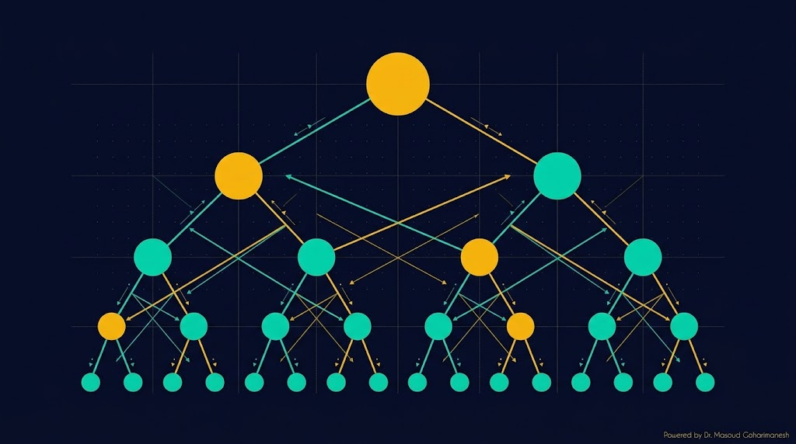

دکتر مسعود گوهری منش
دانشیار گروه مهندسی مکانیک — دانشگاه تربت حیدریه





قرمز: DFT ($N^2$) — سبز: FFT ($N \log_2 N$)


$f[n]$ (پالس)
$g[n]$ (سینوس)
$(f*g)[n]$

from scipy.signal import butter, filtfilt b, a = butter(4, cutoff/(fs/2), btype='low') y = filtfilt(b, a, x) # صفر-فاز


قرمز: سیگنال اصلی + نویز — سبز: فیلترشده